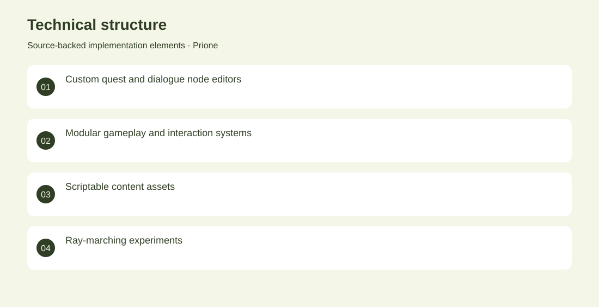

The project
A Unity game prototype with custom quest and dialogue editors, inventory, interaction, movement and scene-management systems. The repository also explores ray-marched higher-dimensional forms. Built node-based editor tooling alongside modular gameplay systems and experimental visual rendering. Archived game prototype. No adoption, revenue or deployment claims are inferred from the repository.
The problem
Interactive narrative requires both runtime systems for players and authoring tools for creating interconnected content.
The solution
Built node-based editor tooling alongside modular gameplay systems and experimental visual rendering.
My contribution
Game-systems engineering and editor-tool development; third-party environment assets remain distinct from authored code.
Technical structure

The portfolio cover is an editorial illustration. No live product screenshot is presented for this project.
Showcase assets
{kind=link}
{kind=link}
{kind=link}
Existing product identity. Newly designed marks are portfolio treatments, not claims of official client branding.